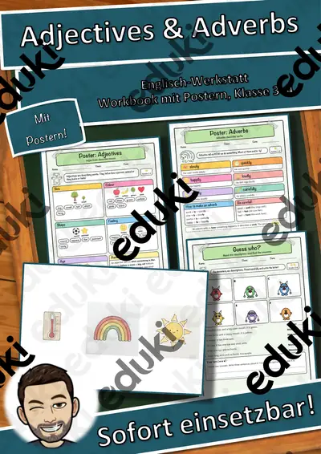
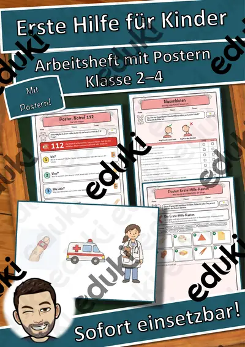

Soziales Lernen – Gefühle, Streit lösen, Klassenrat: Heft mit Postern und Karten Kl. 1–4
Soziales Lernen im Klassenzimmer: Mit diesem Arbeitsheft mit Postern und Karten lernen Kinder, ihre Gefühle zu erkennen und zu benennen, Streit in fünf Schritten zu lösen, Ich-Botschaften zu formulieren und den Klassenrat zu gestalten.
Inhalt (15 Seiten + Deckblatt):
- Überblick mit Differenzierung (ein oder zwei Sterne) und Einsatzhinweisen für Klassenrat und Morgenkreis (1 Seite)
- Poster „Unsere Gefühle“: 8 Gefühle mit gezeichneten Tier-Gesichtern
- Poster „Streit lösen in 5 Schritten“: Stopp sagen, beruhigen, erzählen, zuhören, Lösung finden
- Gefühle erkennen: Gesichter zuordnen
- Wann fühle ich so? Schreib- und Zeichenaufgabe
- Ich-Botschaften formulieren
- Streit-Geschichten: drei kurze Bildgeschichten, Lösung ankreuzen und begründen
- Freundlich oder unfreundlich? Sätze sortieren
- Klassenregeln: unsere 6 Regeln (Vorlage mit Bild)
- Komplimente-Karten für die Warme Dusche (zum Ausschneiden)
- Klassenrat-Protokollvorlage
- Gefühls-Barometer und Wochen-Check zum Einkleben
- Spielkarten „Was würdest du tun?“ mit 12 Situationen (zum Ausschneiden)
- Selbsteinschätzung und Urkunde mit Name, Klasse, Datum und Unterschrift
- Lösungen und Hinweise für die Lehrkraft (1 Seite)Einsatz: Grundschule Klasse 1 bis 4, im Sachunterricht, im Klassenrat, im Morgenkreis oder bei Klassenleitungsstunden, als Heft, für Stationenarbeit, Wochenplan oder Vertretungsstunden. Alle Seiten sind Kopiervorlagen, einzeln einsetzbar und mit Name, Klasse und Datum versehen. Für die Klassen 1 und 2 sind die Seiten bilderreich mit wenig Text, für die Klassen 3 und 4 gibt es Aufgaben mit zwei Sternen. Auf den Seiten begleiten gezeichnete Leitfiguren die Kinder. Die Aufgaben sind eindeutig lösbar, die Lösungen und Hinweise liegen bei.
Texte, Symbole und Layout eigene Erstellung, KI-unterstützt und geprüft. Keine Fotos, keine realen Personen, keine Marken.
Viel Freude beim Ausprobieren wünscht Snice! :)
FachSachunterricht
KlasseKl. 1–2
SchulformGrundschule
MaterialartArbeitsblätter
Ähnliche Materialien

Lesespur: Streit und Konflikte fair lösen – Lesespurgeschichte mit Rätseln (Klasse 7)

Gefühl Lückentext mit Wortspeicher Hörverstehen und Suchsel

Lesespur: Stopp sagen und Hilfe holen: Grenzen erkennen – Lesespurgeschichte mit Rätseln (Klasse 1)

Masken-Werkstatt Gefühle-Masken – Geometrische Gesichter in 3 Stufen (Kunst, Klasse 1–4, Vorlagen + Bausteine)

Wörtliche Rede – Übungsheft mit Postern, Redebegleitsätzen und Comic-Dialogen Kl. 3–4

Lesespur: Masken gestalten: Gesichter verwandeln – Lesespurgeschichte mit Rätseln (Klasse 5)

Englisch-Werkstatt: Adjectives & Adverbs – Describing Words, Poster und Spiele, Kl. 3–4
